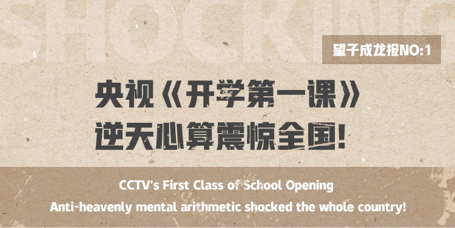
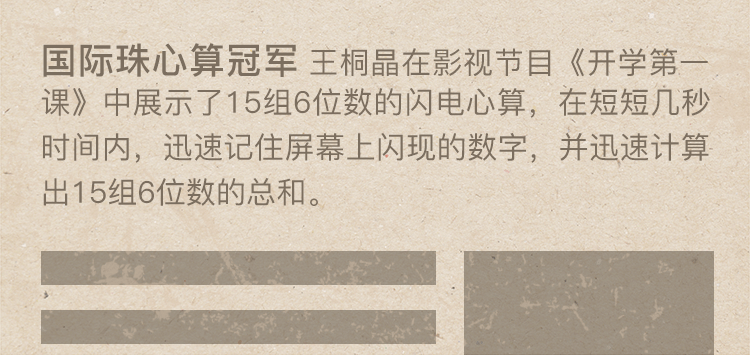
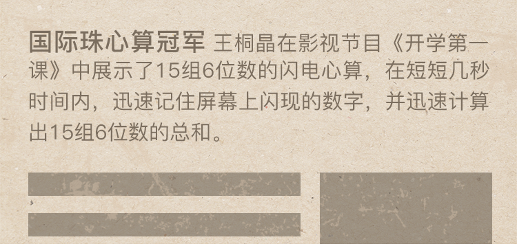
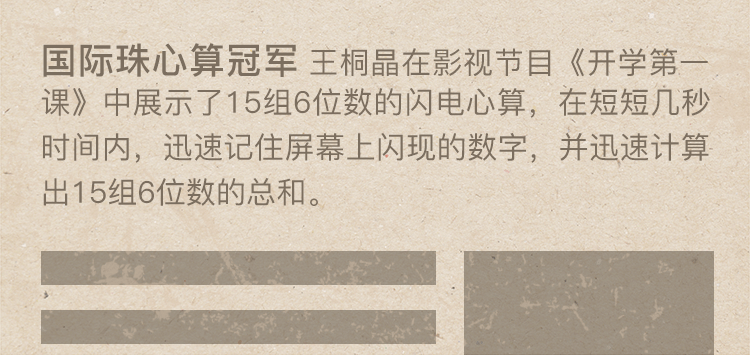
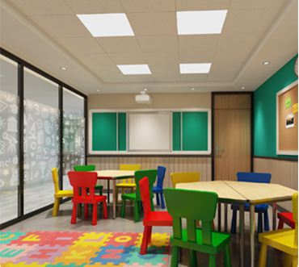

珠心算
智力开发神器
提升学习力/注意力/想象力/意志力

 


 珠心算四大好处
珠心算四大好处
Four benefits of abacus mental arithmetic
提升学习力、注意力、记忆力、想象力、意志力
-
开发右脑，激发潜能专注培养儿童注意力、记忆力、观察 力与想象力等先天能力
-
锻炼学生协调能力手脑口眼耳等多种器官参与，锻炼学 生协调能力
-
培养孩子良好的习惯培养孩子良好的学习习惯，使孩子动 则活跃、静则专注
-
提高计算能力使儿童在学习珠心算后自身的计算能 力迅速提高
珠心算 脑力开发背后的秘密
Abacus calculation The Secret Behind Brain Development
所谓天才的大脑也离不开后天的开发和训练，而珠心算 在儿童脑力与智力的开发方面都有着不容小觑的作用。 儿童教肓家发现，珠心算训练显著的提高了儿童的注意力、记忆力、思维力、创造能力和阅读速度等。
专家力证 珠心算可开发左右脑
Experts argue that abacus arithmetic can develop left and right
锁定名校通行证 小学数学成绩保持年级第一
珠心算 风靡全球
Mental abacus is popular all over the world
美、俄、日、韩、新、马、泰等数十个国家
望子成龙珠心算班环境
WangZiChengLong Abacus mental arithmetic class environment
营造良好学习氛围
- 
-
特色儿童教室
Characteristic Children's Classroom打造轻松儿童课堂